Kelly Lab
(2010)
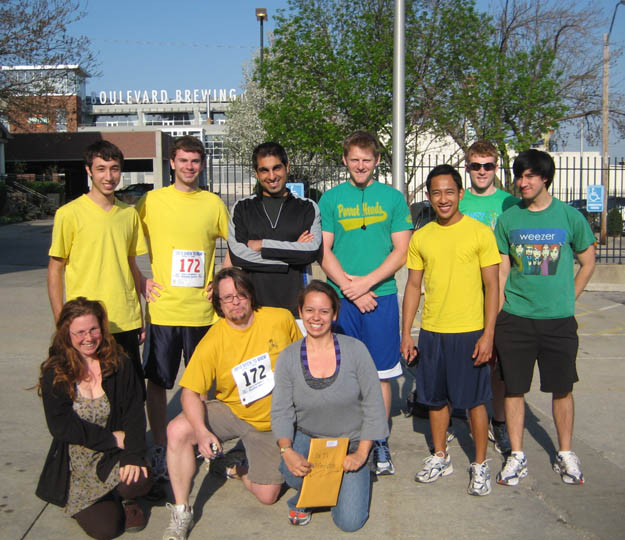
Kelly Lab participates in 2010 Brew-to-brew run, a relay race from Kansas City to Lawrence.
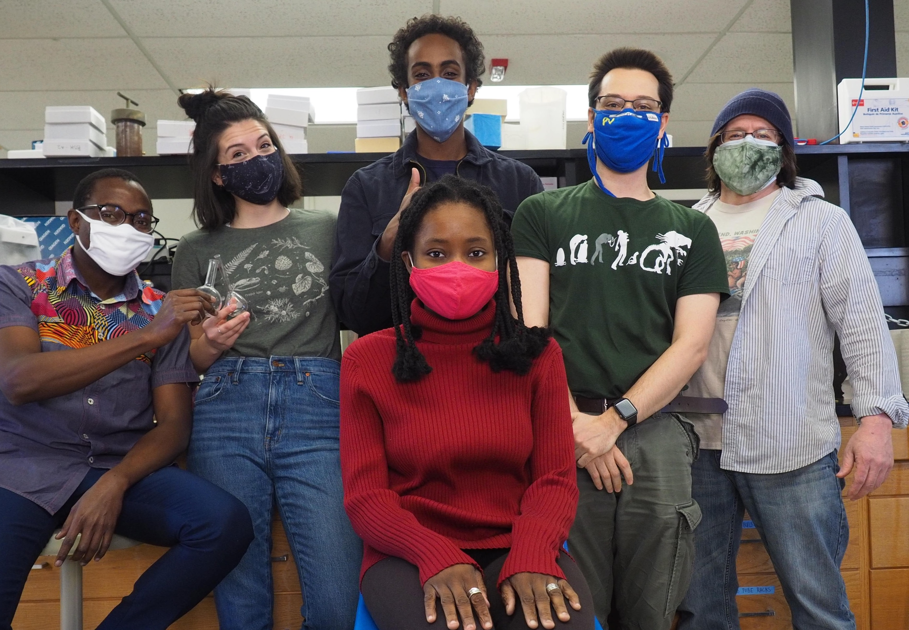Kelly Lab 2020 displays pandemic fashion sense.
Postdoctoral Researchers
Graduate Students
Boryana Koseva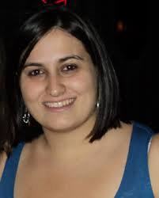
boryana@ku.edu
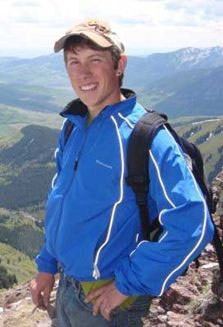Patrick Monnahan
pmonnahan@gmail.com
John Sahrmann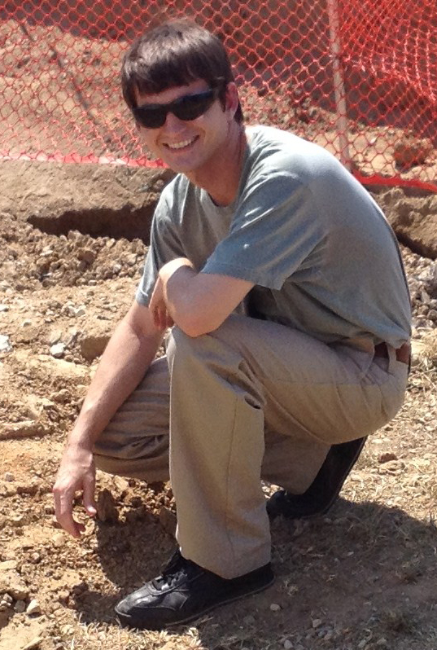
jsahr@ku.edu
Undergraduate Researchers
 Peter Ebeling
Peter Ebeling
pae89@cox.net
 Terra Lubin
Terra Lubin
snibul@yahoo.com
 Katrina McClure
Katrina McClure
anirtak79@yahoo.com
Nick McCool
mccooln@ku.edu
Sierra Taul
sierra.taul@yahoo.com
Garrett Tibbetts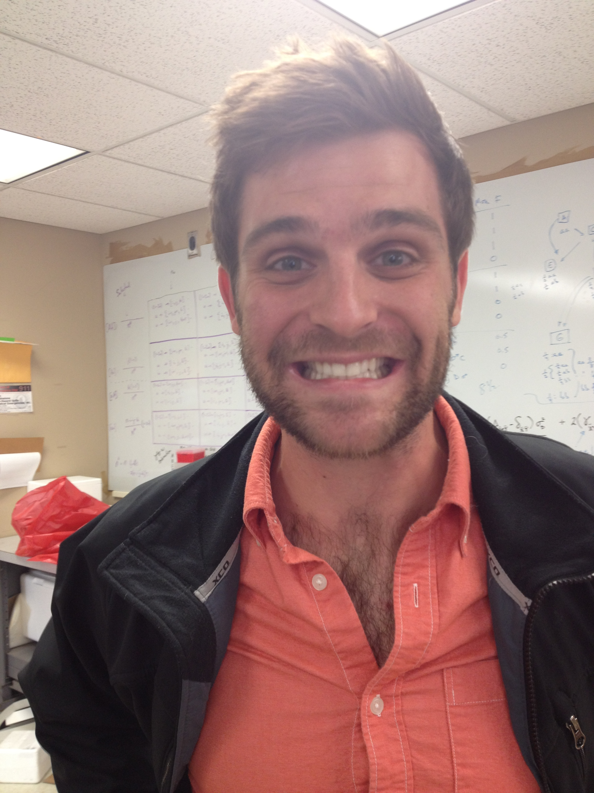
Arash Sattarin
arash-sattarin@ku.edu
 Joel Widmer
Joel Widmer
jwidmer5@ku.edu
Survivors!
Sarah Bodbyl-Roels
scheetah@ku.edu
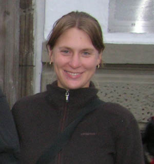Liza Holeski, PhD 2007
holeski@entomology.wisc.edu
Stephen Hudman
shudman@truman.edu
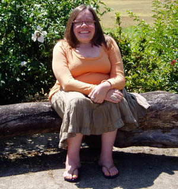Vanessa Koelling
vkoelling@ku.edu
Young Wha Lee, PhD 2009
youngwha.lee@utoronto.ca
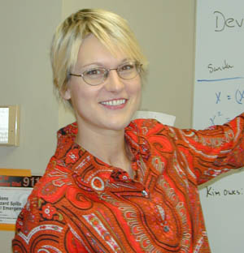Tara Marriage, PhD 2009
tmarria@ku.edu
Julius Mojica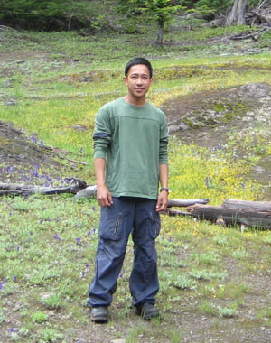
julius.mojica@colostate.edu
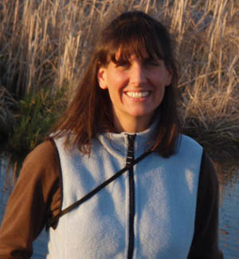Alison Scoville
scoville@cwu.edu